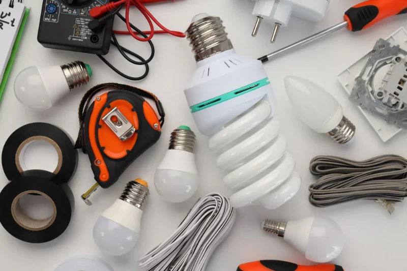

Equipamentos em sua casa que consomem energia:
Chuveiro elétrico: Usa muita potência para esquentar a água rápido em cada banho.
Ar-condicionado: Fica ligado por muitas horas seguidas para resfriar os cômodos.
Geladeira:Fica ligada o dia todo e a noite toda sem parar.
Máquina de lavar roupas: Gasta bastante eletricidade para girar o cesto e aquecer a água em alguns ciclos.
Micro-ondas: Usa alta potência por alguns minutos e consome energia no relógio em modo espera.
Atitudes práticas:
Apagar as luzes: Desligue a luz ao sair de um cômodo.
Regular o ar-condicionado: Use a temperatura em 23°C ou mais para gastar menos.
Tirar da tomada: Retire aparelhos que não estão em uso do plugue.
Usar lâmpadas LED:strong Troque lâmpadas antigas por modelos de LED que duram mais e consomem menos.
Juntar roupas para lavar: Acione a máquina de lavar apenas com a capacidade máxima.
Limpar filtros: Lave os filtros do ar-condicionado para melhorar o fluxo de ar e diminuir o esforço do motor.